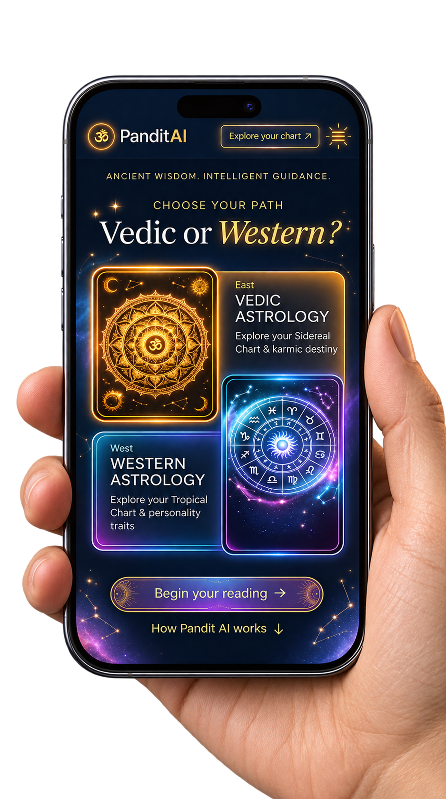

Share your birth details
Enter your date, time and place of birth to begin your chart exploration.
Explore Vedic astrology with a more thoughtful, personal experience. Understand your birth chart, explore compatibility and find perspective for the questions that matter.
From understanding your kundali to exploring relationships and life direction, begin with the area that matters to you.
Explore your Lagna, houses, planets and nakshatras through a clear reading of your Vedic birth chart.
Explore birth chart 02 / RELATIONSHIPSReview Ashtakoota, Guna Milan, Manglik considerations and other traditional compatibility factors.
Explore compatibility 03 / LIFE DIRECTIONUnderstand the astrological themes traditionally associated with work, learning and professional growth.
Explore life themes 04 / TIMING & CYCLESLearn how Vimshottari Dasha and planetary transits are interpreted within Vedic astrology.
Understand your cycles 05 / DAILY PERSPECTIVEExplore daily, weekly and monthly horoscope themes for reflection and mindful planning.
Read your horoscope 06 / ASK & UNDERSTANDGet astrological concepts and chart observations explained in accessible, conversational language.
Start exploringExplore two ancient and fascinating approaches to astrology. Choose the system that speaks to you.

Two traditions. Different perspectives. One journey of self-discovery.
Pandit AI brings traditional astrological frameworks into an approachable digital experience. Add your birth details, explore your chart and read explanations designed to make complex concepts easier to understand.
Explore the astrology experienceEnter your date, time and place of birth to begin your chart exploration.
Review key chart elements, planetary placements and traditional interpretations.
Read clear explanations and explore the questions you want to understand better.
Astrology is a centuries-old interpretive tradition. Our aim is to make its language and methods easier to explore—without presenting any reading as a certainty.
Vedic concepts and terminology remain at the heart of the experience.
Complex chart elements are presented in a simple, readable way.
Your chart is a tool for reflection, not a substitute for your own judgement.
Pandit AI is built for curious minds seeking to understand Vedic astrology in a more accessible way. It brings together traditional chart concepts and AI-assisted explanations to help you explore patterns, ask questions and learn at your own pace.
We believe meaningful guidance begins with understanding. Explore the tradition, consider the interpretations and make your own informed choices.
Read our latest reflectionsTake the first step towards understanding your Vedic birth chart.
Start with Pandit AI